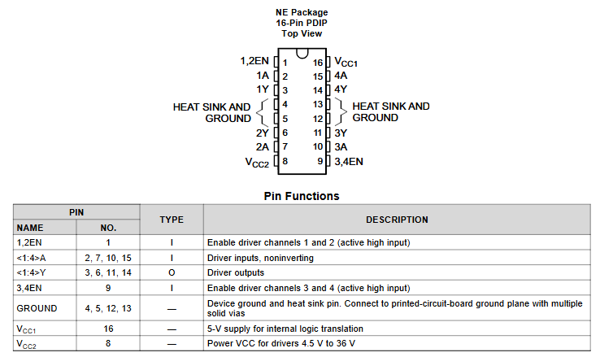

De H-brug
Een H-brug is een schakeling die een stroom kan leveren waarvan je de richting kiest. Daarmee kan je een DC motor in wijzerzin én in tegenwijzerzin laten draaien, zonder ook maar één draad te verleggen.
Met een transistor geraakte je niet verder dan aan en uit. De reden is eenvoudig: die ene transistor zit tussen de motor en de massa, dus de stroom kan er maar op één manier door. Om te keren zou je de twee draden van de motor moeten omwisselen. Een H-brug doet dat met vier schakelaars in plaats van met je vingers.
Waarom die naam?
Teken vier schakelaars in een vierkant met de motor als dwarsbalk in het midden, en je krijgt de vorm van een hoofdletter H. Twee schakelaars hangen aan de plus, twee aan de massa, en de motor zit ertussen.
- Sluit je linksboven en rechtsonder, dan loopt de stroom van links naar rechts door de motor.
- Sluit je rechtsboven en linksonder, dan loopt hij van rechts naar links, en draait de motor de andere kant op.
- Laat je alles open, dan staat de motor stil.
Sluit je linksboven en linksonder samen, dan verbind je de plus rechtstreeks met de massa: kortsluiting, en er loopt geen stroom door de motor maar wel dwars door je schakeling. Bij een kant-en-klare H-brug-IC hoef je daar in de praktijk niet aan te denken, omdat je per zijde maar één stuuringang hebt en het IC zelf de twee schakelaars aanstuurt.
De L293D
Je gaat geen H-brug uit losse transistoren bouwen: dat zit kant-en-klaar in een IC. Wij gebruiken de L293D. Dat is een dubbele H-brug, dus je kan er twee DC motoren mee in beide richtingen laten draaien, of vier motoren in dezelfde richting.

De twee bruggen zitten netjes verdeeld over de twee zijden van het IC. Per brug heb je drie soorten pinnen:
| Soort | Brug 1 | Brug 2 | Wat het doet |
|---|---|---|---|
| Enable | pin 1 (1,2EN) | pin 9 (3,4EN) | Zet de brug aan. Staat deze laag, dan gebeurt er niets, wat je ook op de ingangen zet. |
| Ingangen | pin 2 (1A) en pin 7 (2A) | pin 10 (3A) en pin 15 (4A) | Hierop stuur je vanuit de Arduino. Samen bepalen ze de richting. |
| Uitgangen | pin 3 (1Y) en pin 6 (2Y) | pin 11 (3Y) en pin 14 (4Y) | Hierop hangt de motor. |
Daarnaast zijn er twee voedingen en de massa:
- Vcc1 (pin 16) voedt de logica in het IC en krijgt 5 V.
- Vcc2 (pin 8) voedt de motoren, en dat is de spanning die op je motor terechtkomt. Die mag hoger zijn dan 5 V, want daar hoeft de Arduino niets van te merken.
- GROUND zit op pin 4, 5, 12 en 13. Die vier pinnen dienen ook om de warmte af te voeren, dus verbind ze allemaal.
Hoe je de richting kiest
Een uitgang volgt gewoon zijn ingang. Zet je 1A hoog en 2A laag, dan staat 1Y hoog en 2Y laag, en loopt de stroom van 1Y door de motor naar 2Y. Draai je die twee om, dan draait de motor om.
| 1,2EN | 1A | 2A | Wat de motor doet |
|---|---|---|---|
| HIGH | HIGH | LOW | Draait de ene kant op |
| HIGH | LOW | HIGH | Draait de andere kant op |
| HIGH | LOW | LOW | Staat stil, en remt af |
| HIGH | HIGH | HIGH | Staat stil, en remt af |
| LOW | maakt niet uit | maakt niet uit | Staat stil, en loopt vrij uit |
Merk het verschil tussen de laatste twee gevallen op. Zet je beide ingangen gelijk, dan hangen de twee motoraansluitingen op dezelfde spanning en remt de motor af. Zet je de enable laag, dan hangt de motor gewoon los en tolt hij uit. Dat is precies het gedrag dat je wil kunnen kiezen bij een rolluik of een lift.
Snelheid regelen
De ingangen bepalen de richting, en de enable bepaalt of er stroom loopt. Zet je op die enable-pin geen vaste HIGH maar een PWM-signaal met analogWrite(), dan staat de brug snel afwisselend aan en uit en krijgt de motor gemiddeld minder spanning. Zo regel je de snelheid zonder de richting los te laten.
De enable is de pin waar je wil kunnen dimmen, dus die hoort op een PWM-pin: 3, 5, 6, 9, 10 of 11 op de UNO. De ingangen 1A en 2A schakelen alleen maar aan of uit en mogen op eender welke digitale pin.
En de vrijloopdiodes?
Bij de transistor moest je zelf een vrijloopdiode over de motor zetten. Bij de L293D hoeft dat niet: die diodes zitten al in het IC, en dat is precies waar de D in de naam voor staat. Een kale L293 zonder D heeft ze niet, en dan moet je ze wel zelf voorzien.
De L298N-module
De L298N doet hetzelfde als de L293D maar kan veel meer stroom aan. Je koopt hem meestal niet als los IC maar als kant-en-klare module, met de koelplaat, de diodes en de schroefklemmen er al op.

De pinnen heten anders, maar het zijn dezelfde. Deze tabel vertaalt tussen de twee:
| L293D | L298N | Functie |
|---|---|---|
| 1,2EN | ENA | Enable van motor 1 |
| 3,4EN | ENB | Enable van motor 2 |
| 1A, 2A | IN1, IN2 | Sturing van motor 1 |
| 3A, 4A | IN3, IN4 | Sturing van motor 2 |
| 1Y, 2Y | OUT1, OUT2 | Uitgangen voor motor 1 |
| 3Y, 4Y | OUT3, OUT4 | Uitgangen voor motor 2 |
| Vcc1 | 5V | Voeding voor het IC |
| Vcc2 | 12V | Voeding voor de motoren |
| GROUND | GND | Massa |
Die opdruk is misleidend. Het is gewoon de Vcc2 van daarnet: de spanning die op je motor terechtkomt. Werkt jouw motor op 5 V, dan zet je daar 5 V op. Een motor van 5 V op 12 V zetten omdat het er zo staat, is een dure manier om een motor te slopen.